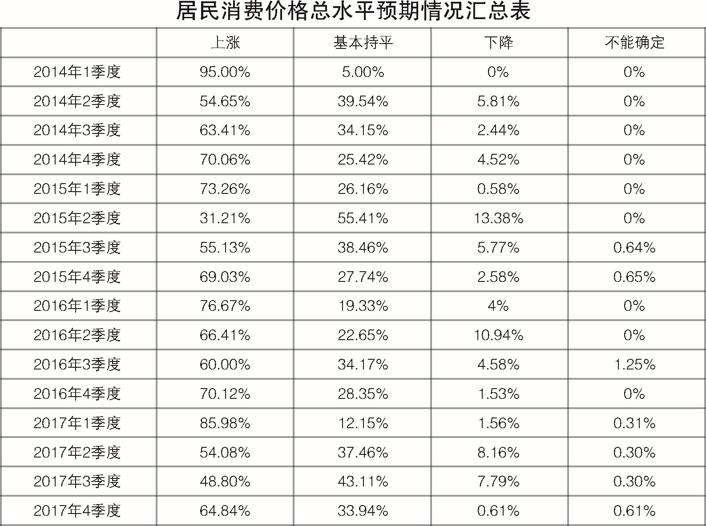
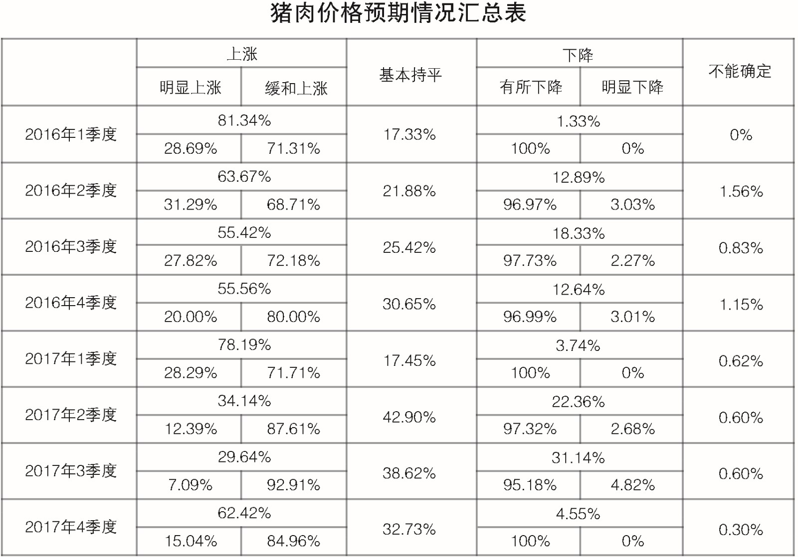

2017年四季度居民消费价格预期调查报告
参加2017年四季度居民消费价格预期调查的专家及相关专业人士330人，收回有效问卷330份，与上期居民消费价格总水平和主副食品价格稳中缓涨预期相比，本期预计上涨人数迅速增加，大部分人预计居民消费价格总水平和主副食品价格上涨，但以缓涨为主；与去年同期相比，本期居民消费价格总水平和主副食品价格预期变化不大。四季度商品房价格预期继续以稳中缓涨为主，但上涨预期继续回落。南京、苏州等热点城市商品房价格预期持续平稳；省内其他大部分城市以上涨预期为主，但部分城市明显上涨预期迅速下降。地方政府多措并举调控下，商品房市场投机需求有所减弱。
一、居民消费价格总水平预期上涨，缓涨为主
与三季度相比，预计四季度居民消费价格总水平上涨214人，占比64.84%，其中，预计缓和上涨195人，明显上涨19人，分别占91.12%、8.88%；预计基本持平112人，占比33.94%；预计有所下降2人，占比0.61%；不能确定2人，占比0.61%；无人预计明显下降。
调查结果显示，预计居民消费价格总水平上涨的人数超过六成，其中超过九成的人预计缓和上涨；预计基本持平的人数约三成。大部分人预计四季度居民消费价格总水平上涨，并以缓涨为主。
从居民消费价格总水平预期走势看，四季度（本期）居民消费价格总水平上涨预期止降转升，较上期的48.8%增加了16.04个百分点；与去年同期的70.12%相比，本期上涨预期减少了5.28个百分点。
与上期43.11%的人预计居民消费价格总水平基本持平相比，本期减少了9.17个百分点；与去年同期的28.35%相比，本期增加5.59个百分点。
本期下降预期继续下降，与上期7.79%的人预计居民消费价格总水平下降相比，本期减少7.18个百分点；与去年同期的1.53%相比，本期减少0.92个百分点。
调查表明，与上期相比，本期居民消费价格总水平看涨人数从低于半数增加到超过六成，大部分人预计居民消费价格总水平上涨，但以缓涨为主。与去年同期相比，本期居民消费价格总水平预期变化不大。

二、主副食品价格预期上涨，缓涨为主
与三季度相比，预计四季度主副食品价格上涨218人，占比66.06%，其中，预计缓和上涨201人，明显上涨17人，分别占92.2%、7.8%；预计基本持平105人，占比31.82%；预计有所下降6人，占比1.82%；不能确定1人，占比0.3%；无人预计明显下降。
调查结果显示，预计主副食品价格上涨人数超过六成，其中超过九成的人预计缓和上涨；预计主副食品价格平稳的人约三成。大部分人预计主副食品价格上涨，并以缓涨为主。
从主副食品价格预期走势看，本期主副食品价格上涨预期大幅上升，较上期的39.22%增加26.84个百分点；与去年同期的60.92%相比，本期上涨预期变化不大，增加5.14个百分点。
与上期49.10%的人预计主副食品价格基本持平相比，本期减少17.28个百分点；与去年同期的34.48%相比，本期略减2.66个百分点。
与上期11.68%的人预计主副食品价格下降相比，本期迅速下降至极低位占比，减少了9.86个百分点；与去年同期的4.22%相比，本期减少2.4个百分点。
调查表明，受节日和季节影响，主副食品价格预期从上期的平稳为主转变为以上涨为主。与去年同期相比，本期主副食品价格预期变化不大。
关于大米、食用油和猪肉价格预期情况。本期预计大米价格上涨78人，占比23.63%，其中，缓和上涨70人，明显上涨8人，分别占89.76%、10.24%；基本持平234人，占比70.91%；有所下降15人，占比4.55%；不能确定3人，占比0.91%。预计食用油价格上涨98人，占比29.7%，其中，缓和上涨88人，明显上涨10人，分别占89.8%、10.2%；基本持平222人，占比67.27%；下降8人，占比2.42%，其中，有所下降7人，明显下降1人，分别占87.6%、12.4%；不能确定2人，占比0.61%。预计猪肉价格上涨206人，占比62.42%，其中，缓和上涨175人，明显上涨31人，分别占84.96%、15.04%；基本持平108人，占比32.73%；有所下降15人，占比4.55%；不能确定1人，占比0.3%。
调查结果显示：与上期相比，本期大米和食用油价格看平预期有所下降，上涨预期迅速上升，但与去年同期相比，本期大米和食用油价格预期基本没有变化。与上期大部分人预计猪肉价格稳中略降相比，本期猪肉价格上涨预期大幅上升，下降预期大幅下降，大部分人预计猪肉价格上涨，但以缓涨为主。与去年同期相比，猪肉价格预期变化不大，其中上涨预期有所上升。

三、商品房总体价格预期稳中缓涨，热点城市预期平稳，大部分三四线城市预期上涨，缓涨为主
与三季度相比，预计四季度商品房总体价格上涨186人，占比56.36%，其中，预计缓和上涨153人，明显上涨33人，分别占82.26%、17.74%；预计总体价格基本持平118人，占比35.76%；预计总体价格有所下降21人，占比6.36%；预计总体价格明显下降2人，占比0.61%；不能确定3人，占比0.91%。绝大部分人预计四季度商品房总体价格稳中缓涨，并以缓涨为主。
从商品房价格预期走势看，与去年商品房价格上涨预期持续高涨相比，今年以来，上涨预期迅速下降，到二季度有所反弹后又持续下降。与上期的60.18%相比，本期减少3.82个百分点；与去年同期的80.08%相比，本期上涨预期迅速下降，减少了23.72个百分点
与上期27.84%的人预计商品房价格保持平稳相比，本期增加了7.92个百分点；与去年同期的13.79%相比，本期大幅增加了21.97个百分点。
与上期11.38%的人预计商品房价格下降相比，本期减少4.41个百分点；与去年同期的3.83%相比，本期增加3.14个百分点。
调查表明，与上期相比，本期商品房总体价格上涨预期继续下降，但仍超过半数，商品房总体价格预期继续保持稳中缓升态势。与去年同期相比，商品房总体价格上涨预期明显下降，看平预期大幅上升。
关于全省各地商品房价格预期情况。三个热点城市，南京预计四季度商品房价格上涨人数占比45.95%，其中缓和上涨86.27%，明显上涨13.73%；基本持平45.04%；有所下降6.31%；明显下降1.8%；不能确定0.9%，绝大多数人继续保持南京四季度商品房价格稳中缓涨的预期。无锡预计四季度商品房价格上涨人数占比43.75%，其中缓和上涨85.71%，明显上涨14.29%；基本持平43.75%；有所下降12.5%，绝大部分人预计无锡四季度商品房价格稳中缓涨。苏州预计四季度商品房价格缓和上涨人数占比45.45%，基本持平54.55%，所有的人预计四季度苏州商品房价格稳中缓涨。省内其他城市，与上期超过七成的人预计商品房价格上涨相比，本期常州和盐城商品房价格上涨预期迅速下降，看平预期大幅上升，其中常州以稳中缓涨预期为主，盐城以基本持平预期为主。其余各市大多数人预计四季度商品房价格上涨，其中南通、扬州、泰州、宿迁四个市预计上涨人数超过八成，但较上期有所回落；徐州、连云港、镇江三个市预计上涨人数超过七成；淮安预计上涨人数约六成。与上期四个市明显上涨预期高于缓和上涨预期相比，本期均以缓和上涨预期为主。
从调查情况看，受调控政策持续性和严厉性的影响，今年以来，全省商品房市场价格总体上得到有效控制，商品房价格预期稳中缓涨。南京、苏州等热点城市商品房价格保持平稳运行态势；其他城市商品房价格预期，与上期相比，大部分城市继续保持价格上涨预期，但较上期部分城市明显上涨预期高于缓和上涨预期相比，本期均以缓和上涨预期为主，投机需求有所减弱。